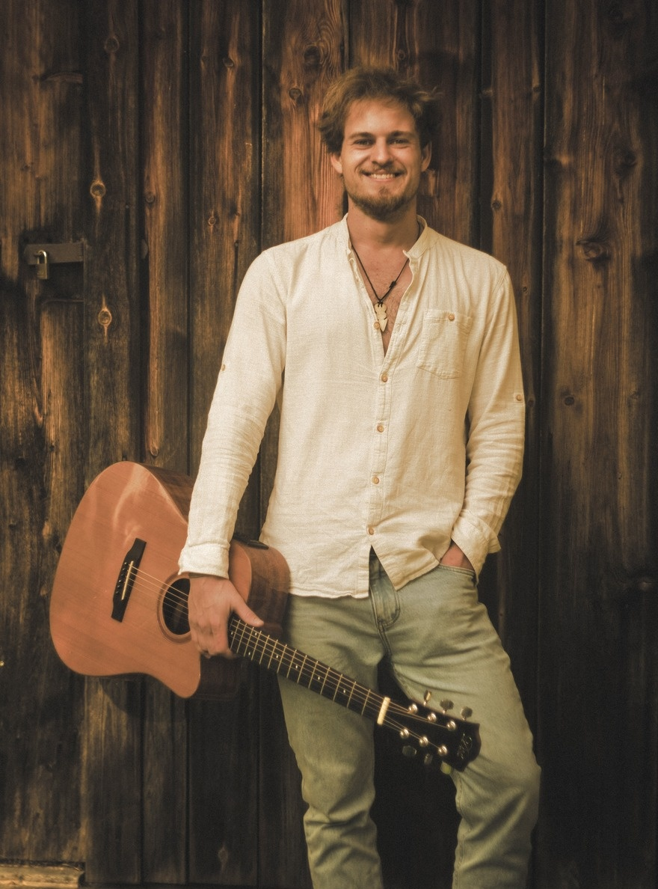
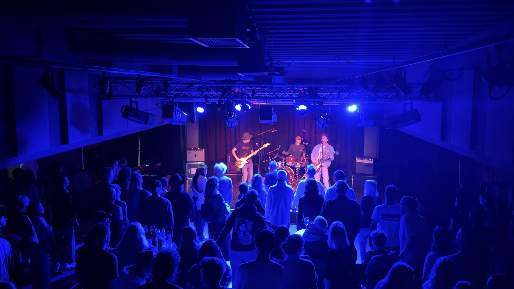
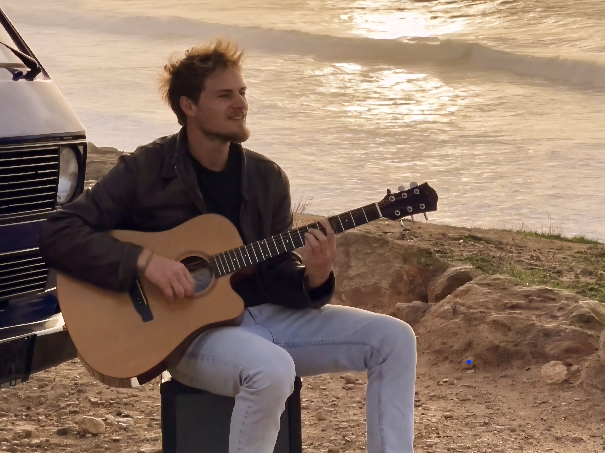
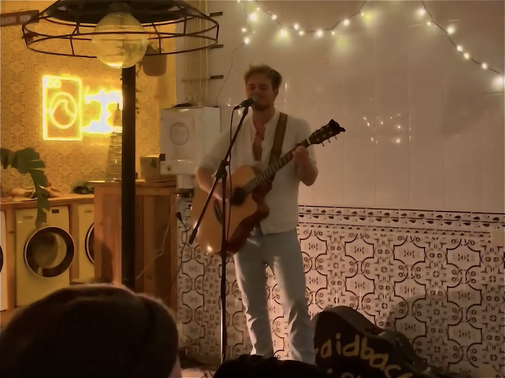
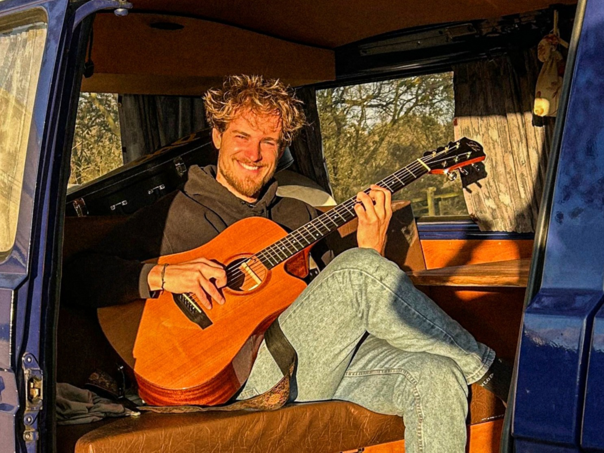

Bars & Restaurants
Musik, die zum Genießen, Tanzen und Mitsingen einlädt bringt Gäste zusammen
Austrian Indie / Folk Soul
Livemusiker und Songwriter aus Tirol Echte Musik, echte Energie, echte Begegnungen

Der Kunstler
Ich bin Lorenz – Livemusiker und Songwriter aus Tirol. Musik begleitet mich schon seit frühster Kindheit. Durch Jahre in verschiedensten Bands und Musikprojekten habe ich gelernt, dass echte Emotionen in dem Moment entstehen, wenn Künstler und Publikum sich begegnen.
Durch die Musik drücke ich meine Erfahrungen und das Lebensgefühl vom Reisen aus, das von interessanten Begegnungen und Eindrücken geprägt ist.
Musik lebt meiner Meinung nach nämlich von Authentizität und der unmittelbaren Energie.
Für verschiedenste Feiern und Events passe ich mein Set flexibel an die Atmosphäre vor Ort an.
Live Performance
Live-Musik für jeden Anlass: authentisch, flexibel, unvergesslich
Musik, die zum Genießen, Tanzen und Mitsingen einlädt bringt Gäste zusammen
Mit Live-Musik werden Geburtstag, Familienfeier oder Jubiläum zu einem echten Highlight
Mit Bühnenenergie, die das Publikum bewegt
Mit Live-Musik schaffen Sie unvergessliche Momente für Ihre Teams und Kunden
Repertoire
Musikstil
Indie, Folk, Pop, Rock & Singer-Songwriter — Covers und eigene Songs
Equipment
Gitarre, Looper, professionelle PA-Anlage — von unplugged bis vollverstärkt
Flexibilität
Set-Dauer und Repertoire individuell anpassbar — Songwünsche willkommen
Have a special song in mind? Get in touch and we'll make it happen.
Discography
Visual
Momente







Folge Laidback Lory auf allen Plattformen fur neue Veroffentlichungen, live Sessions, Geschichten und Momente.